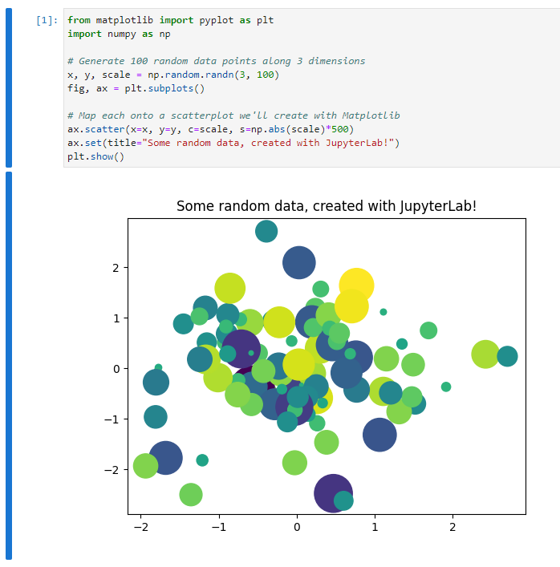

Python quick guide
Contents
1.3. Python quick guide#
1.3.1. Python Notebook#
We mainly use Python Notebook (.ipynb) to write documents for this course. Currently all main stream Python IDE support Python Notebook. All of them are not entirely identical but the differences are not huge and you may choose any you like.
One of the easiest ways to use Python Notebook is through JupyterLab. The best part about it is that you don’t need to worry about installation and configuration in the first place, and you can directly start to code.
Click the above link and choose JupyterLab. Then you will see the following page.

The webapp you just started is called JupyterLite. This is a demo version. The full JupyterLab installation instruction can also be found from the link.
There is a small button + under the tab bar. This is the place where you click to start a new cell. You may type codes or markdown documents or raw texts in the cell according to your needs. The drag-down menu at the end of the row which is named Code or Markdown or Raw can help you make the switch. Markdown is a very simple light wighted language to write documents. In most cases it behaves very similar to plain texts. Codes are just regular Python codes (while some other languages are supported). You may either use the triangle button in the menu to execute the codes, or hit shift + enter.

JupyterLite contains a few popular packages. Therefore it is totally ok if you would like to play with some simple things. However since it is an online evironment, it has many limitations. Therefore it is still recommended to set up a local environment once you get familiar with Python Notebook. Please check the following links for some popular choices for notebooks and Python installations in general, either local and online.
1.3.2. Python fundamentals#
We will put some very basic Python commands here for you to warm up. More advanced Python knowledge will be covered during the rest of the semester. The main reference for this part is [3].
1.3.2.1. Indentation#
Python is using indentation to denote code blocks. It is not convienent to write in the first place, but it forces you to write clean, readable code.
By the way, the if and for block are actually straightforward.
if jj < 3:
jj = jj
print("It is smaller than 3.")
if jj < 3:
jj = jj
print("It is smaller than 3.")
for i in range(3):
i = i + 1
print(i)
for i in range(3):
i = i + 1
print(i)
Please tell the differences between the above codes.
1.3.2.2. list and dict#
Here are some very basic usage of lists of dictionaries in Python.
newlist = list()
newlist.append(1)
newlist.append('hello')
print(newlist)
newlisttwo = [1, 'hello']
print(newlisttwo)
newdict = dict()
newdict['one'] = 'good'
newdict[1] = 'yes'
print(newdict)
newdicttwo = {'one': 'good', 1: 'yes'}
print(newdicttwo)
1.3.2.3. Loop through lists#
When creating for loops we may let Python directly loop through lists. Here is an example. The code is almost self-explained.
alist = ['one', 2, 'three', 4]
for item in alist:
print(item)